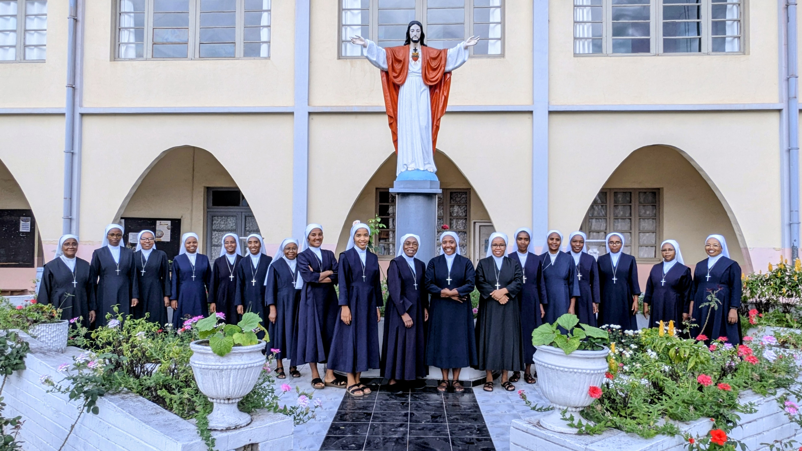

NY KARISMANAY

FANABEAZANA
FANABEAZANA FOTOTRA AMIN'NY MAHA OLONA FENO.

FAHASALAMANA
FITSABOANA SY FIKARAKARANA NY MAREFO .

EO ANIVON'NY FIANGONANA
ASA AO AMIN'NY FIANGONANA .

Izahay Maseran’ny Fo Masin'i Jesoa avy any Raguse Italia dia fikambanan-drelijiozy katolika vehivavy. Naorin'i Olontsambatra Mère Maria Schininà tamin'ny 9 Mey 1889 tao Raguse (Ragusa), Sisily, Italia. Efa miely amin'ny firenena maro ny fikambanana ankehitriny , anisan’izany i Madagasikara . Ny toe-piainana iainanay dia ny fitiavana sy fanonerana ao amin'ny Fo Masin'i Jesoa, izay asehonay amin'ny asa famindram-po sy ny fanompoana ny mahantra sy ireo sahirana. Kendrenay ny hampiseho ny fitiavan'i Kristy amin'ny alalan'ny asa sy ny fiainanays andavanandro. “ Miondrika amin'ny mahantra ” .
FANABEAZANA FOTOTRA AMIN'NY MAHA OLONA FENO.
FITSABOANA SY FIKARAKARANA NY MAREFO .
ASA AO AMIN'NY FIANGONANA .

Miely amin'ny diosezy maro eto Madagasikara ny fikambanana ary mirotsaka amin'ireo karazana sehatra maro na ao amin'ny Fiangonana na ivelany .